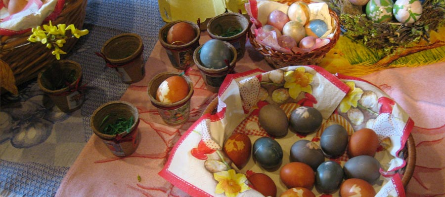

21. März — Frühjahrsputz
Reinigung des Museums innen und außen mit gemeinsamem Mittagessen.

Feste und Termine
Veranstaltungen im Park der elsässischen Häuser.
Reinigung des Museums innen und außen mit gemeinsamem Mittagessen.
Spiele und Aktivitäten rund um elsässische Osterbräuche.
Aperitif, Flammkuchen und Konzert der Musique Union Reichstett von 11 bis 12:30 Uhr.
Traditionelles Brennen von Mirabellen am 9. Mai; Museumsfahrt in den Doubs am 10. Mai.
Wiederaufbau des Hauses Buschwiller von 1554, Verputzen, Streichen und Restaurieren alter Gegenstände.
Vereinsdorf in Straßburg und anschließend Generalversammlung.
Elsässische Weihnachtstraditionen, Handwerk, Verpflegung und Abendessen.